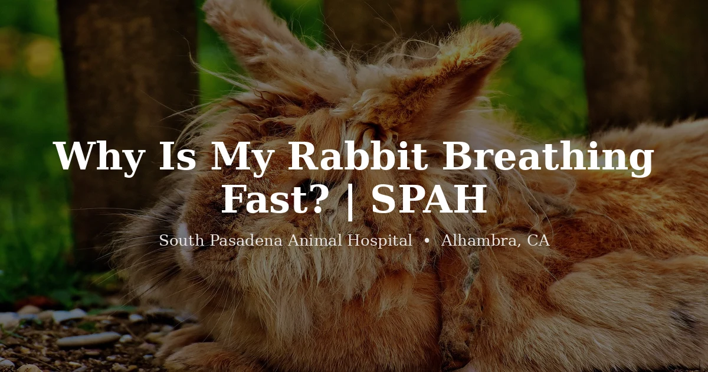

October 14, 2026 · 7 min read
Why Is My Rabbit Breathing Fast?

Few things send a rabbit owner into a panic faster than a belly that won't stop fluttering. We get it. Rabbits are maddeningly quiet about pain, they'll hide a serious problem until it's advanced, so when the only clue you get is fast breathing, it feels like a warning light with no label. Take a breath yourself first. Some fast breathing is completely normal. The real skill is learning to tell the harmless kind from the kind that means business.
Here's a number that surprises most owners: a calm, resting rabbit breathes somewhere around 30 to 60 times a minute. Way faster than a dog or cat. The nose twitches, the body moves gently, and it all happens with no apparent effort. So "fast" for a rabbit is already fast by our standards. What actually worries us is breathing that stays rapid while the rabbit is just sitting there doing nothing, or breathing that arrives with a second symptom riding alongside it.
The reasons that usually aren't an emergency
Heat
This is the first thing on our minds through a San Gabriel Valley summer, because our heat is really dangerous for rabbits. They don't sweat. They can't pant their way cool the way a dog does. Their whole cooling system is basically their ears, and that's not much to work with. Once a room drifts into the 80s°F, a rabbit can start tipping into trouble. The early picture: fast breathing, lying flat and stretched out, ears hot to the touch. See that and don't wait. Move the rabbit somewhere cool right now and call a vet. Heatstroke in rabbits can go from "a little warm" to life-threatening alarmingly fast.
Fear and excitement
A rabbit is a prey animal to its core, and its body treats a vacuum cleaner the way ours would treat a fire alarm. Car rides do it. A new dog in the house does it. A hawk's shadow sliding across the patio absolutely does it. The breathing speeds up, the heart hammers, the rabbit goes still. The reassuring part is how quickly it resets. Take away the scary thing, give it a few minutes, and a healthy rabbit settles back down. If that's the arc you're watching, you've got a working nervous system, not a sick bunny.
The reasons we take seriously
Here's where fast breathing stops being a mood and starts being a message. When it doesn't settle, or it shows up alongside other signs, we stop assuming and start looking.
Pain, often from the gut
Ask us what's usually hiding behind a rabbit that's breathing fast and sitting in a tight hunch, and the answer is pain, and in rabbits, pain so often comes from the gut. When a rabbit quits eating, the digestive system stalls, gas builds, and it hurts. The rabbit tells you in its own vocabulary: quick shallow breaths, a hunched-up posture, belly pressed hard to the floor, teeth grinding softly. We walk through that whole cascade in our guide to GI stasis in rabbits. The headline you need tonight, though, is blunt: a rabbit that isn't eating and is breathing fast gets seen the same day. Not watched overnight. Same day.
Respiratory infection
Owners still call it "snuffles," and the name has stuck for a reason. Rabbits get upper and lower respiratory infections, and they announce themselves: fast or labored breathing, yes, but usually a runny nose, crusty front paws from wiping that nose, sneezing, or a faint rattle when they breathe. Check the inside of the front legs. Matted, crusty fur there is a tell we rely on. These infections don't clear up if you ignore them. They burrow in and can drop into the lungs, so this is an exam, not a wait-and-see.
Heart disease and other internal problems
This is the smaller slice, but it's real. Sometimes fast breathing is the surface of something deeper. A failing heart, fluid building around the lungs, or severe anemia. You can't eyeball any of that. And that's the whole point: when a rabbit is breathing fast and there's no obvious, fixable reason staring back at you, "let's just watch it" is the wrong call. That rabbit needs an exam.
The line that means "go now"
Rabbits are obligate nose-breathers. They breathe through the nose and essentially never through the mouth. So open-mouth breathing in a rabbit is a genuine emergency, full stop. The same goes for gums that look pale or bluish, obvious struggling, or a rabbit stretching its neck out to breathe. If you see any of those, seek veterinary care immediately. Your regular vet during the day, or an emergency hospital if it's after hours. This isn't a symptom to sleep on.
When to get your rabbit seen
We'd want to see a rabbit that:
- Is breathing fast at rest and it isn't clearly heat or a passing scare
- Is breathing fast and not eating, hunched, or grinding its teeth in pain
- Has nasal discharge, crusty paws, sneezing, or noisy breathing
- Is lying stretched out with hot ears on a warm day
- Is lethargic, wobbly, or not its usual self
And treat open-mouth breathing, pale or blue gums, or obvious distress as an immediate emergency. We're a rabbit-savvy practice and see them routinely at our rabbit vet in Alhambra. If you'd like to know what an exam involves, our exotic vet services and pricing page lay it out.
Frequently Asked Questions
What is a normal breathing rate for a rabbit?
A resting rabbit breathes about 30 to 60 times a minute, nose and body moving together with little effort. It can spike much higher after exercise, in heat, or with fear, then settle. Breathing that stays fast at rest is the part worth watching.
Why is my rabbit breathing fast and not moving?
Fast breathing with stillness, hunching, or the belly pressed to the floor usually points to pain or feeling unwell rather than excitement. Gut pain from GI stasis is a common cause. Because rabbits mask illness so well, treat this as a same-day vet concern.
Is open-mouth breathing in a rabbit an emergency?
Yes. Rabbits breathe through their nose and almost never through the mouth. Open-mouth breathing, pale or blue gums, or obvious struggling is a true emergency. Seek veterinary care immediately, including an emergency hospital if it's outside your vet's hours.
Can heat make my rabbit breathe fast?
Absolutely. Rabbits tolerate heat poorly and can overheat once it climbs into the 80s°F, which is common here in the San Gabriel Valley. Fast breathing, lying stretched out, and warm ears can be early heat stress. Move the rabbit somewhere cool right away and contact a vet. Heatstroke in rabbits escalates quickly.